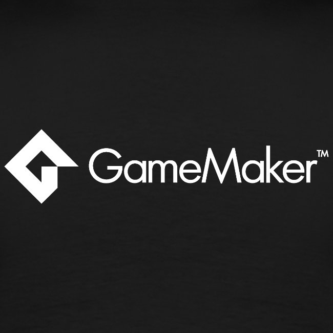
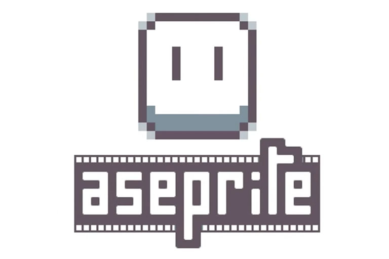
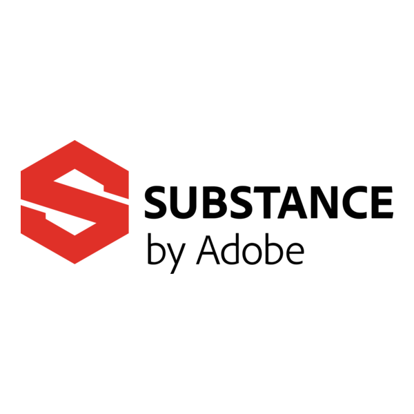
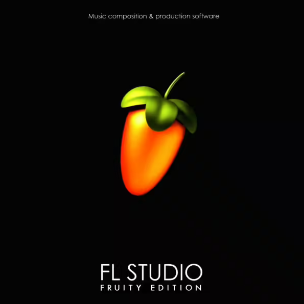
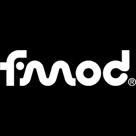
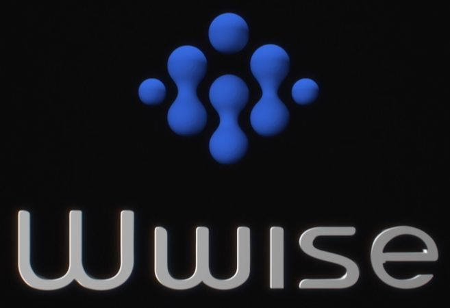

Desarrollo de Videojuegos
Herramientas y Motores de Desarrollo
En el desarrollo de videojuegos se utilizan diversas herramientas que permiten crear gráficos, sonidos, niveles y mecánicas de juego. Aquí te mostramos algunas de las más importantes:
Motores de Videojuegos
Unity

Motor popular para juegos 2D y 3D. Usa C# y permite exportar a múltiples plataformas.
Unreal Engine

Motor de Epic Games, usado para juegos AAA por sus potentes gráficos realistas.
Godot

Motor libre y de código abierto con un lenguaje propio llamado GDScript.
GameMaker
Ideal para juegos 2D, fácil de usar con su sistema de eventos y scripts.
Herramientas de Diseño y Arte
Blender

Software gratuito de modelado y animación 3D con amplias funciones para videojuegos.
Photoshop

Usado para crear texturas, ilustraciones y diseño 2D de alta calidad.
Aseprite
Herramienta ideal para crear pixel art y animaciones 2D cuadro a cuadro.
Substance Painter
Permite pintar materiales realistas sobre modelos 3D con precisión.
Sonido y Programación
Audacity

Editor de audio gratuito para grabar y mejorar efectos de sonido.
FL Studio
Software de producción musical usado para componer bandas sonoras.
FMOD
Sistema que integra sonido dinámico e interactivo en videojuegos.
Wwise
Herramienta profesional para diseñar audio adaptativo en videojuegos.